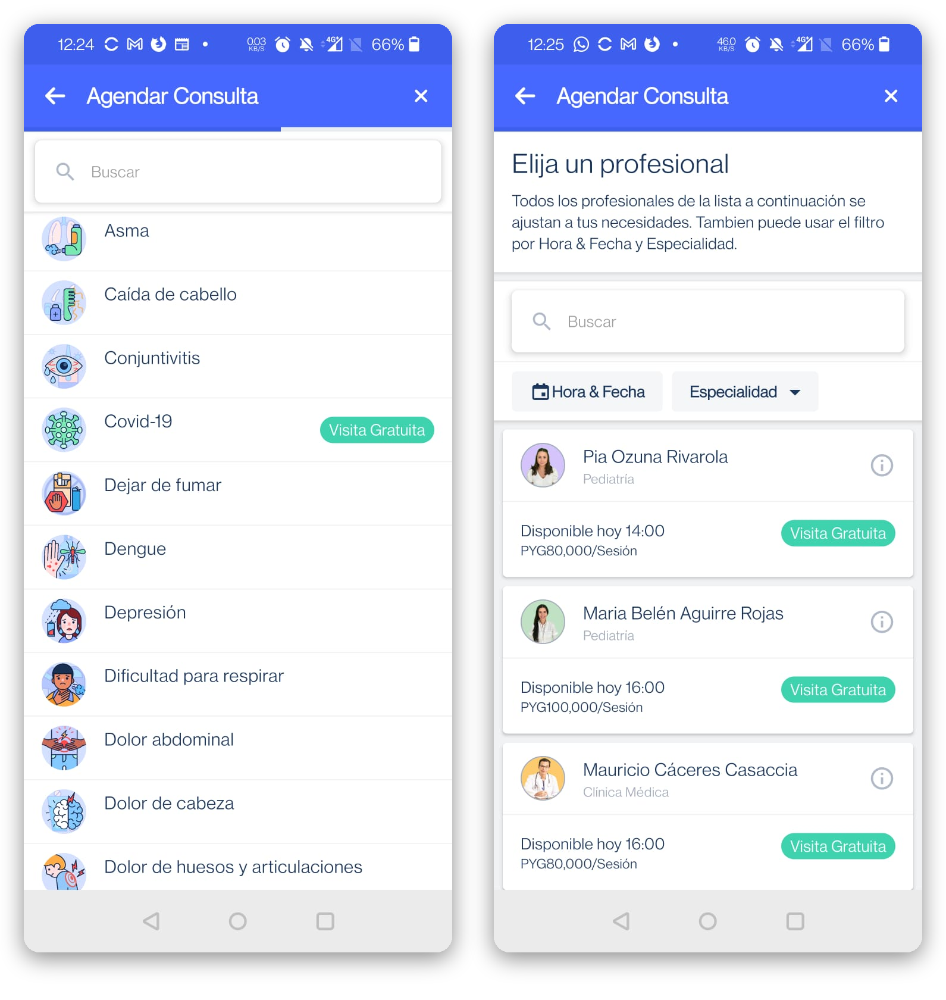
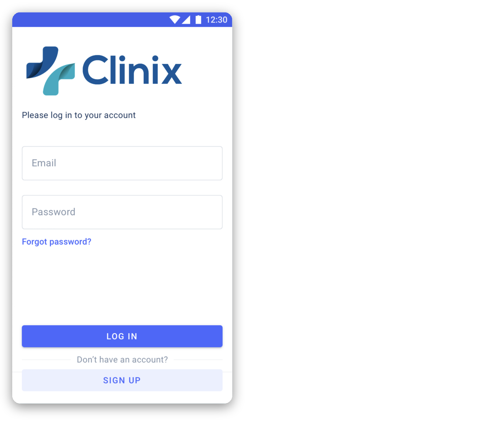
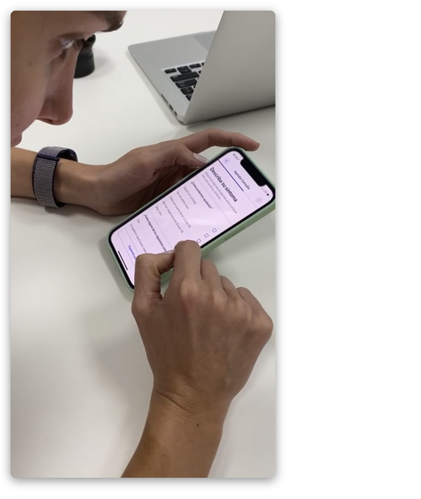

Redesigning onboarding for a telemedicine app
Overview
I initiated and carried out a redesign of the onboarding flow for Clinix, a telehealth startup in Paraguay.
Problem
After the first launch of the app: none of the downloads were leading to a booked appointment.

Outcome
- Users who downloaded the app and then made it to the last step before booking went from around 2% to around 90%.
- New users who went on to book a consultation rose from 0% to around 5%.
- Users could move around the app without logging in. Login was only necessary at the last step before booking.
- A doctor's appointment was now booked the way they were used to: by the doctor's specialty, not by the patient's symptom.
Process
Goals and scope
Customers could be deciding not to book for any number of reasons, among them doctor availability, price and the hours on offer. I narrowed the scope down to what could be put down to a bad user flow alone. Increase the percentage of users who make it from downloading the app to the step where the available doctors and hours are shown.
Research
- Analytics
- Stats from the Play Store and the App Store
- Click tests with 3 users from the target group
- 5 user interviews
Discoveries
- Users got blocked by having to log in on the first screen before being able to see anything of the app
- Users were confused by the first booking step: to choose their symptom and not the doctor's specialty, which is the way to book a doctor's appointment in Paraguay


Decisions
- Move the signup/login to the very last step before confirming and paying for the appointmentThis way users could get more of a feel for what booking an appointment through Clinix was about before being forced to make a decision to sign up.
- Rework the structure of the booking flowAlthough a big and costly change, I considered it necessary. All 3 tested users and 4 out of 5 interviewed users expressed they felt no confidence in the app or in Clinix when they couldn't book in their usual way. Seeing a doctor through an app and not physically was already making them hesitant.
What I'd do differently today
I didn't design the initial flow, but I reviewed it and signed it off. It was developed together with Paraguayan doctors, but not tested enough on Paraguayan users before launch. The cost of rebuilding could have been avoided by testing with simple methods at an earlier stage.